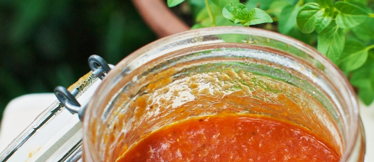

приготовление:
-
На 8 крупных помидорах сделать крестообразные надрезы, ошпарить их кипятком, а затем аккуратно снять кожицу. Очистить и вымыть 2 белые луковицы и 4 зубчика чеснока. Вымыть 2 красных острых перца и удалить семена. Вымыть и обсушить 20 г укропа и 40 г синего базилика (или Thai basil).
-
Сложить овощи и зелень в блендер и измельчить. В небольшую кастрюлю или сотейник налить 10 ст. л. растительного масла и поставить на огонь. Когда масло разогреется, выложить томатное пюре и довести до кипения. Добавить 1 ст. л. соли и 6 ч. л. сахара, перемешать. Убавить огонь до минимального, накрыть крышкой и тушить соус, периодически помешивая, один час.
-
В итоге соус должен стать густым и однородным. Хранить в холодильнике после остывания.